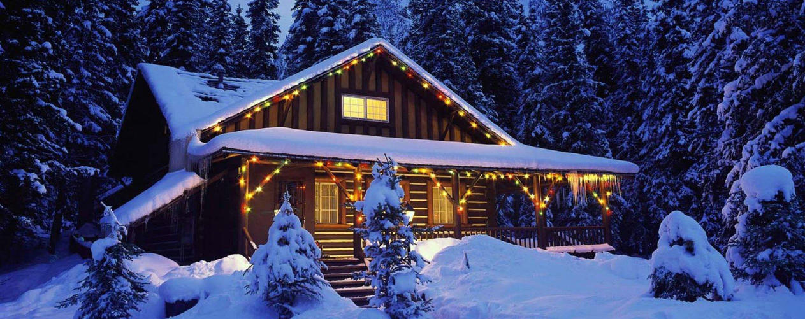

Четыре Сезона
туристическая компания
+7 (499) 707-70-37
-

Путешествие в Великий Устюг
READ MORE > -
Путешествие в Великий Устюг
READ MORE >
-
Инна, ГБОУ СОШ № 606-2, Москва, Отрадное:
12.01.2015 - 14:38Выражаем огромнейшую благодарность за профессионализм Валерии Дидковской! Она просто волшебница: и погода в Карелии стояла великолепная, сказочная, и дети не скучали ни одной минутки - так была продумана вся программа нашего тура. Мы в ВОСТОРГЕ!! Дети не хотели уезжать, хотя морозец с 26 декабря по 29 декабря стоял крепчайший. Мы в полнейшем восторге от концерта органной музыки в Кандопожском органном зале! Многие ребятишки слушали орган впервые в жизни! А какие мастер-классы! Особенно детям понравилось лепить и выпекать пирожки-калитки. А поездка на водопад Кивач! Мы готовы путешествовать и дальше! Спасибо огромное! Всем рекомендуем поездку в Карелию с детишками.
-
Анна:
12.01.2015 - 07:52От имени всех: и учителей, и детей, и родителей, хочу выразить огромную благодарность менеджеру Валерии Дидковской за организацию тура "В гости к Карельскому Деду Морозу". Эта поездка оставила неизгладимые впечатления в сердцах каждого из нас. Очень интересная программа, отличное питание и условия проживания. Мы возили детей 3-его класса - отзывы только положительные. Очень рекомендую не бояться вывозить таких маленьких туристов. С компанией "Четыре сезона" вы в надежных руках!!!
-
Наталья:
30.12.2014 - 13:06Хочу поблагодарить менеджера Наталью за организацию школьного тура в Карелию. Тур безумно понравился, дети в восторге (10 класс). Увидели, что такое настоящая снежная зима!!! Все 3 дня дети были полностью заняты, интересные развлечения, отличный сервис, хорошая гостиница и питание... Один из учеников, по приезде, сказал: "Это самый лучший НГ в моей жизни!!!" Рекомендую....
-
Ольга:
17.12.2014 - 10:48Выражаем огромную благодарность Екатерине Комаровой за организованную 30 ноября экскурсию в Александров! Все наши пожелания были учтены. Организация на высшем уровне! Автобус комфортный, доехали быстро, даже ранее начала эксурсии в музее. Однако ждать не пришлось - экскурсовод организовала посещение всех музеев без ожиданий. Огромное спасибо! Приятно работать с профессионалами своего дела! Поздравляем Вас с наступающим Новым годом! Желаем процветания Вашей компании! Классный руководитель и родительский комитет 4 "А" гимназии № 1539.
-
Клочкова Светлана. Школа № 707:
14.12.2014 - 10:50Спасибо, менеджеру Комаровой Галине, за организацию и проведение экскурсии в Гжель! Спасибо Валентине Николаевне, нашему экскурсоводу, за интересную и познавательную информацию. Нам очень понравилось. Все довольны! Спасибо!!!
-
Галина Витальевна:
08.12.2014 - 17:21Хочу выразить огромную благодарность Комаровой Екатерине. За организованную поездку в Санкт-Петербург! Все было отлично! В гостинице нас радушно приняли, кормили очень вкусно! экскурсовод потрясающий! Вы отличная команда! Так Держать!
-
Юлия:
07.05.2014 - 12:16Хочу выразить огромную благодарность менеджеру турфирмы «Четыре сезона» Дидковской Валерии за организацию экскурсии нашей школьной группы в г. Санкт-Петербург с 30.04 по 04.05.2014г. Все наши пожелания были учтены, составлен замечательный тур. И питание, и гостиница, и очень удобный автобус — все было на высшем уровне! Спасибо огромное и экскурсоводу по Питеру Осокиной Анне Петровне! Желаю Валерии и всем сотрудникам турфирмы «Четыре сезона» дальнейшего процветания, удачи и всего самого наилучшего! Здесь работают ответственные, дружелюбные и добросовестные девочки! Спасибо Вам огромное!!!!!
-
Наталья:
18.04.2014 - 5:24Хочется выразить благодарность ТК «Четыре Сезона» от организаторов поездки по программе «Каникулы на Янтарном побережье». Менеджер компании Валерия Дидковская пошла нам навстречу и учла все наши пожелания. Были сомнения, где остановиться, и наш выбор пал на гостиницу «Раушен» в г. Светлогорске. Учитывая тот факт, что ездим мы много по городам России (есть с чем сравнить) гостиница нас порадовала. Особенное переживание было за питание… Хотим выразить еще раз огромную благодарность поварам! Восхитительные каши, блинчики по утрам на шведский стол, и волшебные ужины. Можно писать сколько угодно… Читать отзыв полностью...
-
Ольга:
11.04.2014 - 8:4522-24 марта 2014 состоялась поездка в Карелию группы школьников из МБОУ школы №4 г. Долгопрудный. Для нас это был первый опыт школьного туризма. Хотим поблагодарить Дидковскую Валерию за прекрасно организованный отдых. Она смогла договориться не только с Дедом Морозом, который дожидался нас до конца марта(!), но и с погодой (было солнечно и снежно). Незабываемая лыжная прогулка, волшебный концерт органной музыки, водопад Кивач, игры и экскурсии оставили неизгладимые впечатления как у детей, так и у взрослых. Cпасибо за теплый прием в отеле «Карелия», за игры и мастер-классы, за пироги-калитки и куклы-обереги. Спасибо нашему гиду Огурцовой Наталье Михайловне, водителям и аниматорам. Готовимся к новым путешествиям.
-
Школа 1101:
23.12.2013 - 10:3213 декабря 2013 года с нашим классом ездили на экскурсию в Дом-музей В.М. Васнецова. Хотим выразить большую благодарность за организацию нашей экскурсии Валерии Дидковской!!! Все организованно, автобус приехал без опозданий, очень понравился сопровождающий нас Гид. Детишки и родители остались довольно! Спасибо Вам огромное!
-
Марина:
19.11.2013 - 12:4015 ноября 2013 года учащиеся ГБОУ СОШ №2044 посетила хлебокомбинат в Бирюлево. Выражаем благодарность Грудевой Александре за организованное мероприятие. Детям очень понравилось. Мы уже давно работаем с Александрой и всегда довольны организованными ею экскурсиями. Все четко, без опозданий и качественное обслуживание. Большое спасибо!
-
Галина:
18.11.2013 - 1:2416 ноября 2013 г. с группой школьников от фирмы «Четыре сезона» ездили в г. Высоковск на фабрику Ёлочных украшений. Хочу поблагодарить фирму, и особенно, Александру Грудеву, за отлично организованный тур. Огромное Вам спасибо за доставленную радость мы просто в восторге и с нетерпением ждем новых интересных экскурсий, просим администрацию туристической компании материально поощрить Александру, так как благодаря таким работникам, ваша компания приумножается доброй славой. Александра огромное Вам спасибо,желаем удачи в делах и карьерного роста.
-
Елена:
15.11.2013 - 7:38Выражаем огромную благодарность за организацию экскурсии для нашей группы ГБОУ СОШ 99 в Казань с 02.11.13-06.11.2013 Валерии Дидковской. Были исполнены и учтены все наши пожелания. Все решалось оперативно и своевременно. Читать отзыв полностью...
-
Руководители группы Каплина Жанна Александровна и Архипова Ирина Михайловна:
13.11.2013 - 4:17Убедительно просим администрацию туристической компании материально поощрить Дидковскую Валерию, так как благодаря таким работникам, ваша компания приумножается доброй славой, расширяя круг ваших туристов. Она занималась оформлением документов на выезд московских школьников в Казань в период с 30.10 по 01.11.13. Учтены были все пожелания и принимающая сторона показала своё гостеприимство. Экскурсовод в Казани, Фирова Наталья, поразила нас своей эрудицией и безупречным знанием истории России.
-
Милена:
08.11.2013 - 12:282-5 ноября 2013 г. с группой школьников от фирмы «Четыре сезона» ездили в г. Казань. Хочу поблагодарить фирму, и особенно, Комарову Екатерину, за отлично организованный тур. Все условия договора были выполнены на оценку отлично. Огромное Вам спасибо за доставленную радость.